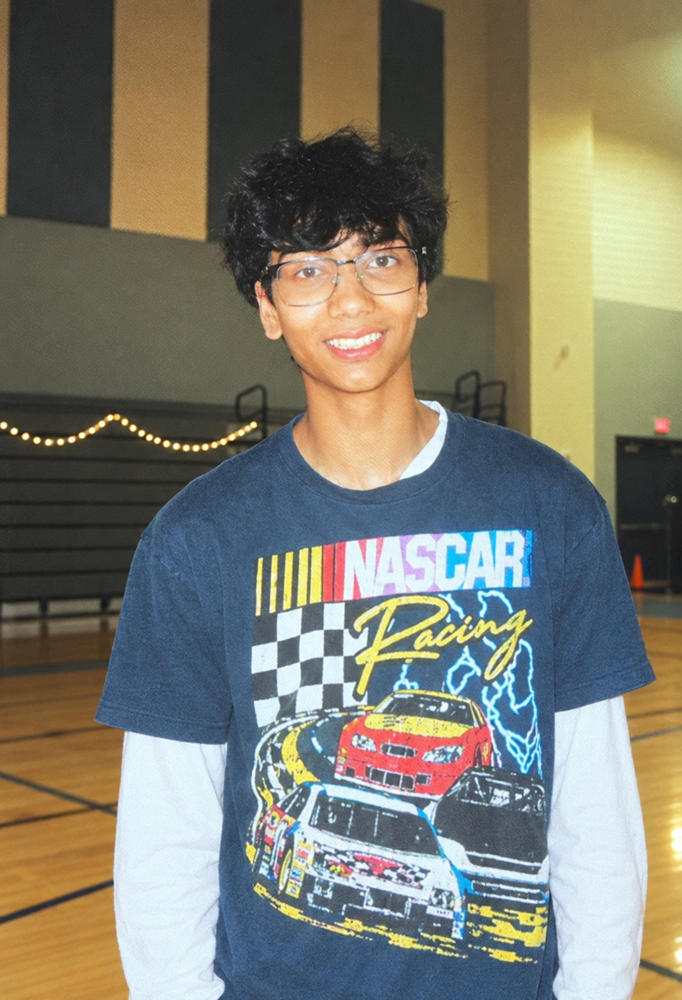

Chrome & Microsoft Edge
Second Brain extension
Save supported accessibility preferences once, then let Second Brain remember them as you browse in Chrome or Microsoft Edge.
Install for Chrome or EdgeAVAILABLE NOW · BROWSER EXTENSION
Your accessibility preferences, remembered.
Set preferences once. Use them as you browse.
Second Brain is a Chrome and Edge extension that applies supported settings on websites that allow extension changes.
Explore the productThe walkthrough shows a user raising text size to 177% and turning on reduced motion, link highlighting and voice navigation on one website, then opening a second website where the same settings are already applied, and using the voice commands 'scroll down' and 'click sample button'.
LIVE CHECKER
Paste a public webpage link. The Checker runs automated accessibility tests, then uses AI to summarize verified findings and suggest next steps.
Automated findings still need human review.
Research
AI is changing what's possible in accessibility — and what it still gets wrong. We dig into both.
Read the researchMission
About
I'm a high school student building at the intersection of accessibility and computer science, informed by public policy and responsible-AI research. AccessAI began with a practical question: why should people repeat the same personal setup on every website while builders struggle to prioritize technical accessibility reports?

Try it out
Install Second Brain for browsing preferences, or run a quick accessibility check before your next review.
Chrome & Microsoft Edge
Save supported accessibility preferences once, then let Second Brain remember them as you browse in Chrome or Microsoft Edge.
Install for Chrome or EdgeAccessibility Checker
Paste a public page URL and get plain-English explanations of automated findings, why they matter, and what to review next.
Try the checker